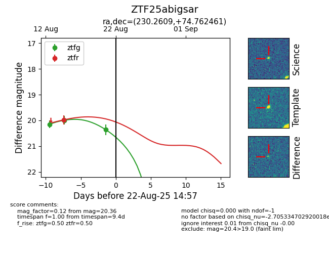

Target ZTF25abigsar at 2025-08-22 15:21, see:
FINK: fink-portal.org/ZTF25abigsar
Lasair: lasair-ztf.lsst.ac.uk/objects/ZTF25abigsar
ALeRCE: alerce.online/object/ZTF25abigsar
alt names
ZTF25abigsar (ztf,alerce)
coordinates:
equatorial (ra, dec) = (230.2609,+74.76246)
galactic (l, b) = (111.1223,+38.73872)
photometry
last ztfg=20.36, ztfr=19.98
3 ztfg, 1 ztfr detections
